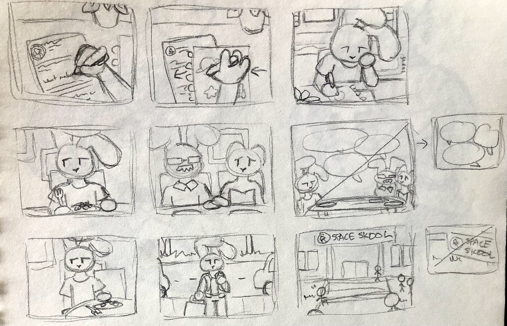

march 2023 <
Stuck In Orbit is a short animated video, drawn frame by frame in FireAlpaca and edited using DaVinci Resolve.

The short film was created to bring light to the struggles that queer or otherwise marginalized groups are often shunned out of large industries, such as the space industry. They are often told that "people like them" cannot succeed the same way the average heterosexual white male can. I really wanted to encapsulate that slow, subtle, and gnawing feeling that you are unlike the people around you.
The video, however, ends with a feeling of hope and belonging. I wanted to highlight the importance of perseverance and having allies recognise these struggles and show their support.
